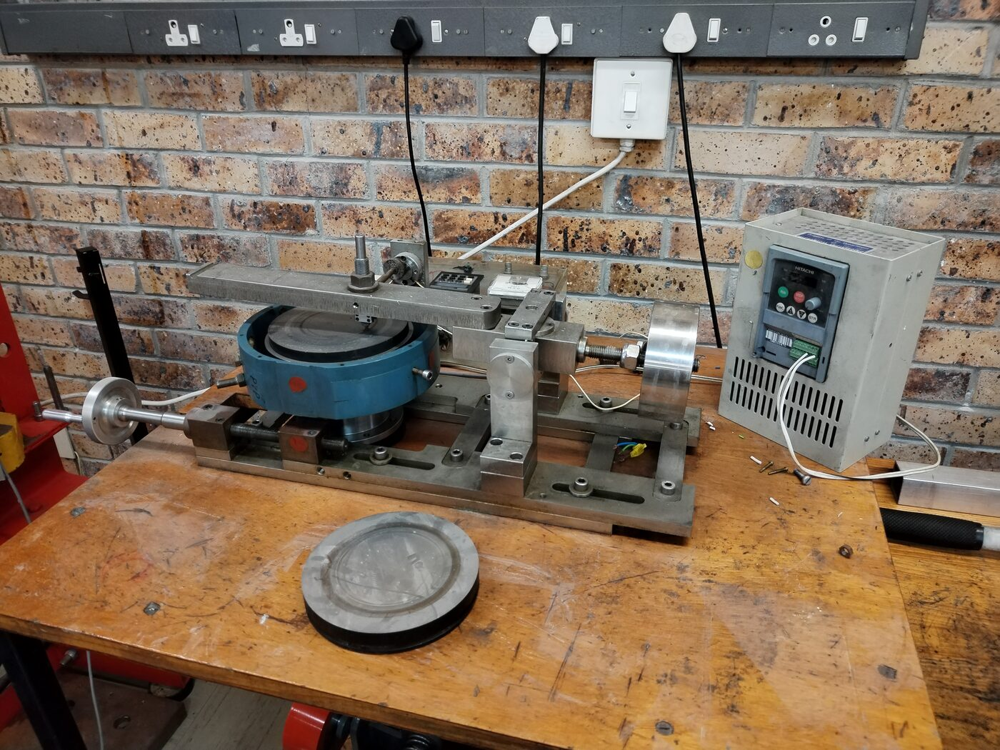

Supervision of undergrads
Short explanation: I was in charge of running winter and summer vacation work design projects for undergrads in the lab.
Long explanation: Most winter and summer vacations, I have supervised undergrad students doing the same vacation work program that I originally did at the CME. In their case I had them working on a pin-on-disk wear testing machine, pictured below.

The machine works by placing a spherical pin of some specified material onto a rotating disk with some specified force. After a certain path length travelled, volume loss is measured and thus surface wear properties are calculated. The students would be tasked with helping to restore the machine both mechanically and electronically so that it could be used for future experiments.
Realistically the task was beyond the capabilities of an average undergrad student in six weeks, but the point of the exercise was never to have a perfectly usable machine for the lab, but to provide undergrads with valuable experience (in an environment where they are free to make lots of mistakes). It struck me that each time supervising them, the same pattern would be followed. They would spend time grappling with the sub-tasks they were assigned, which I encouraged them to do—rushing into solutions is ill advised when time could be spent defining the problem. They would then come up with ideas and quickly become attached to them, and it would take me a lot of work to convince them of the flaws. Eventually, through frustration and backtracking, and with guidance, their designs would steadily improve until I gave the green light to manufacture them.
This was striking because it was the same process I have struggled with in the past: becoming emotionally attached to the first, second, or third design, to the point where it becomes difficult to see its problems. I've realized that one of the most valuable skills an engineer can have is to criticize his/her own work as harshly as anybody else's work. Perhaps this is the same reason having supervisors is important. Now, when I am advising or supervising undergrads, this is one of the things I stress the most: do not become emotionally attached to your designs. Personally, I'd be lying if I said I don't still struggle with this, but I am aware of the problem and actively working on improving to some effect.